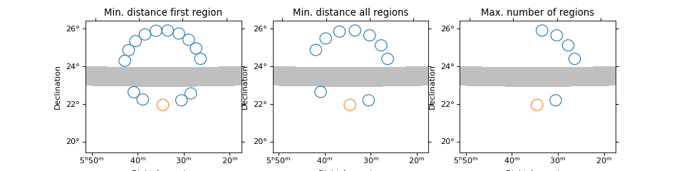

Reflected regions¶
Details on the reflected regions method can be found in [Berge2007]
The following example illustrates how to create reflected regions for a given circular on region and exclusion mask.
"""Example how to compute and plot reflected regions."""
import matplotlib.pyplot as plt
import numpy as np
from astropy.coordinates import SkyCoord, Angle
from regions import CircleSkyRegion
from gammapy.image import SkyImage, lon_lat_rectangle_mask
from gammapy.background import ReflectedRegionsFinder
exclusion_mask = SkyImage.empty(
nxpix=801, nypix=701, binsz=0.01,
coordsys='CEL', xref=83.633, yref=23.014, fill=1
)
# Exclude Rectangular region
mask = lon_lat_rectangle_mask(
exclusion_mask.coordinates().ra,
exclusion_mask.coordinates().dec,
lat_max=Angle('24 deg'),
lat_min=Angle('23 deg')
)
exclusion_mask.data *= np.invert(mask)
pos = SkyCoord(83.633, 22.014, unit='deg')
radius = Angle(0.3, 'deg')
on_region = CircleSkyRegion(pos, radius)
center = SkyCoord(83.633, 24, unit='deg')
finder = ReflectedRegionsFinder(
region=on_region,
center=center,
exclusion_mask=exclusion_mask,
min_distance_input='0.2 rad',
)
finder.run()
finder.plot()
plt.show()
{kind=link}
{kind=link}
